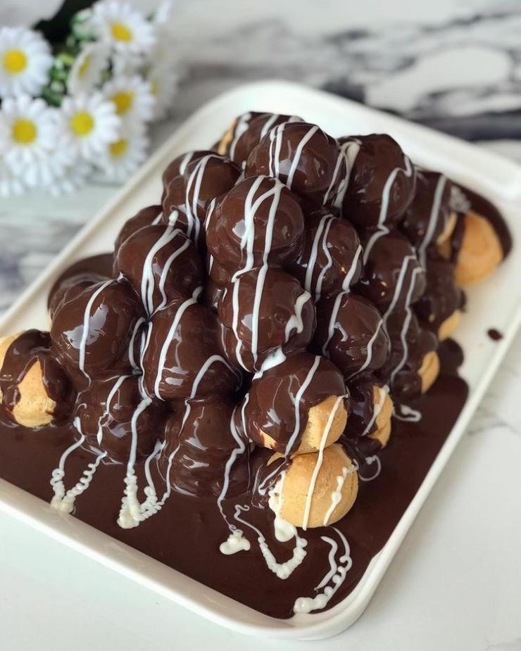

Yapması ne kadar uzun sürüyorsa yemesi de bir o kadar
kısa süren profiterol nasıl yapılıyormuş gelin birlikte
bakalım...
Tarif: Onedio Şef'i
Kaç Kişilik : 6 Kişilik
Hazırlama Süresi : 60 Dakika
Pişirme Süresi : 40 Dakika
Malzemeler

Hamuru için:
1 su bardağı su
1 su bardağı un
125 gram margarin
3 adet yumurta
Kreması için:
2,5 su bardağı süt
1,5 su bardağı şeker
1 adet yumurta
1 paket vanilya
Sosu için:
80 gram bitter çikolata
Profiterol Nasıl Yapılır?
İlk olarak profiterolün hamurunu yapmak için küçük bir tencereye bir su bardağı suyu ve margarini koyun ve eritin.
Ardından 1 su bardağı unu ekleyip karıştırın. 2-3 dakika boyunca karıştırdıktan sonra elde ettiğiniz hamuru 10-15 dakika soğumasını bekleyin.
Yumurtaları hamurun içine teker teker kırın ve çırpın. Yapışkan bir hamur elde ettikten sonra hamuru 10 dakika daha dinlendirin.
Sonra bir kaşık yardımıyla hamurdan ceviz büyüklüğünde parçalar alın ve tepsiye dizin. Daha önceden ısıtılmış 180 derecede 40 dakika pişirin.
İkinci adım olarak kremasını hazırlamaya başlayın. Vanilya haricinde diğer tüm malzemeleri bir tencereye alın ve pişirin. Kaynadıktan sonra vanilyayı da ekleyip 5 dakika daha çırpın.
Ardından profiterolleri ortadan ikiye kesip içini krema ile doldurun ve üst üste dizin.
Son olarak da benvari usulü erittiğiniz bitter çikolata sosunu profiterollerin üzerine dökün. Servise hazır.